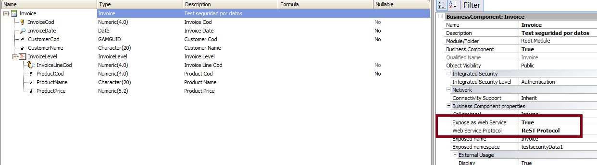

This document explains how to delete data using a Business Component exposed as Rest web services in GeneXus. First, let's see the basic guidelines: How do I call the Rest service in GeneXus?Use the HttpClient data type. What are the HTTP methods to delete data?Delete the data using the HTTP DELETE verb. The PK values have to be added to the query string when the HTTP DELETE verb is executed. ExampleConsider the following example, where we want to delete an Invoice record (which is a two-level transaction). Note that the BC is exposed as a Rest Service.  Here we are going to delete the Invoice whose InvoiceId=1. Sample Code
&httpclient.Host= &server
&httpclient.Port = &port
&httpclient.BaseUrl = &urlbase
&httpclient.Execute('DELETE','Invoice/1')
if &httpclient.StatusCode = 200
&result = &httpclient.ToString()
else
msg("There was an error deleting the data: " + &httpclient.StatusCode.ToString())
endif
Download the sample from Sample Delete Rest BC Notes:
See AlsoBusiness Components as Rest web services in GeneXus
Note:
|
| Backlinks |
| Toc:Rest web services in GeneXus |